이달의 추천 맛집
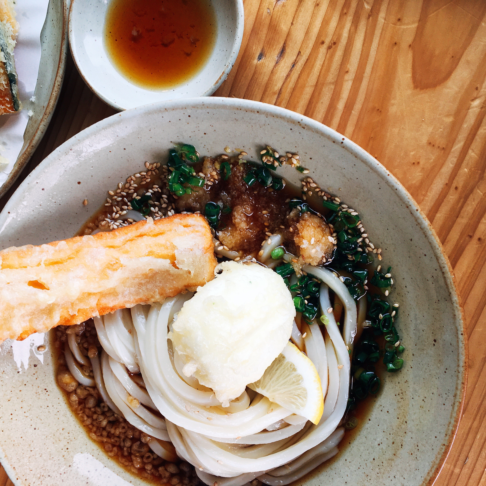
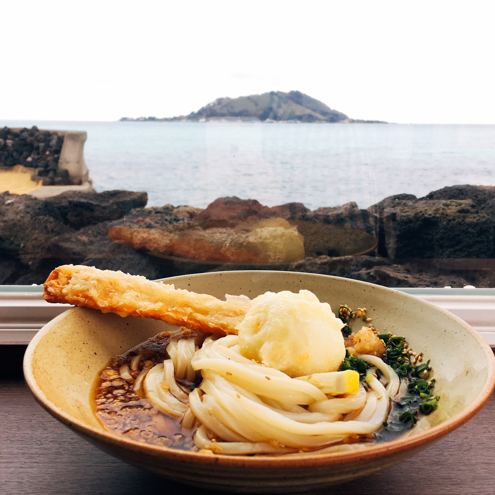
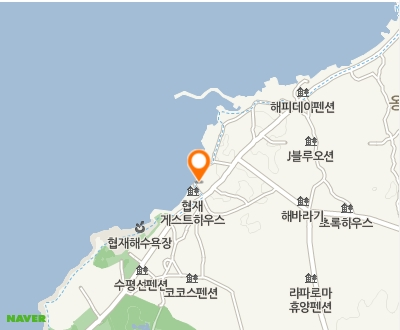
제주도 협재 해변 근처에 위치한 우동 전문점으로 미리 웨이팅 리스트에 적어 놓아야 할 정도로 인기 있는 곳! 주위의 경관과 식당에 앉아 보이는 경관이 아름답다.
지역별 추천 맛집
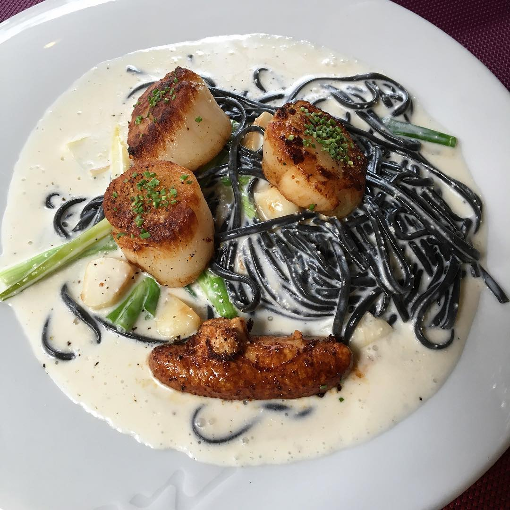
가로수길에 위치한 "가티"는 한국적인 식재료들을 이용한 생면 파스타를 맛볼 수 있는 곳입니다. 베스트는 '저염 명란, 관자 크림 먹물 생면'과 '완도 전복과 성게알 리조또', '매운 계란 베이컨 생면'입니다.
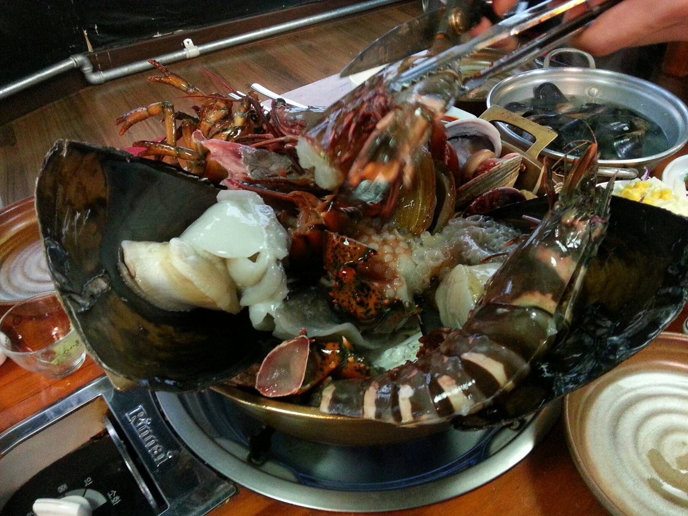
이름과 다르게 수원시에 위치한 군포해물탕! 싱싱한 해산물과 넉넉한 양으로 승부하는 맛집! 예약은 필수!
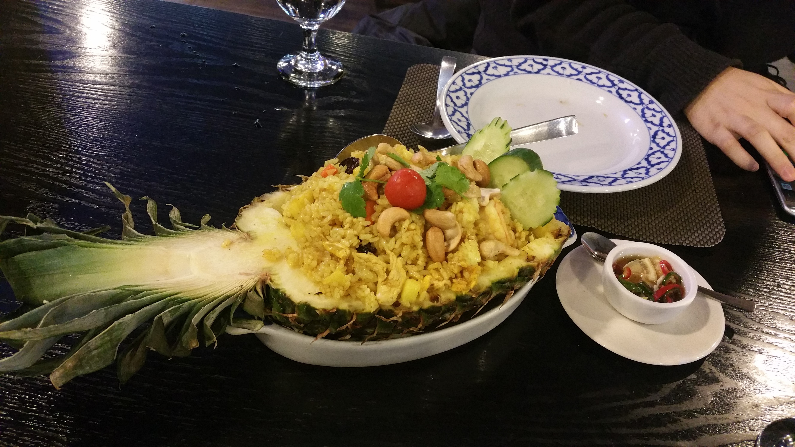
이태원역 근처에 있는 "왕타이" 새우샐러드와 비슷하지만 새콤달콤한 플라꿍과 게살이 들어간 커리인 뿌팟뽕커리를 추천합니다. 연령대 구분없이 다양해서 온가족이 무난히 즐기기 좋은 타이 음식점입니다.
방송에 소개된 맛집

실시간 후기
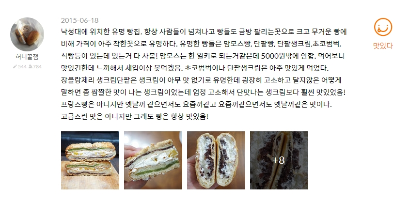
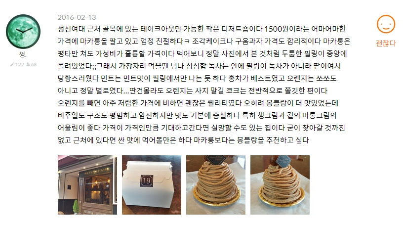
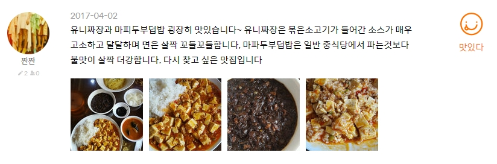
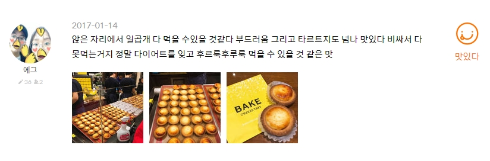
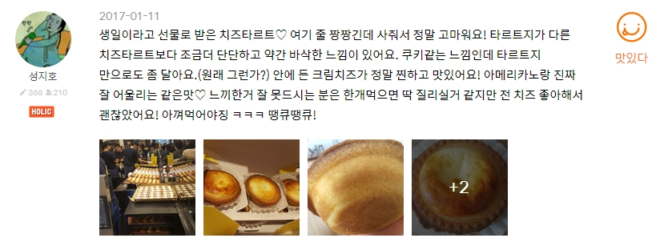